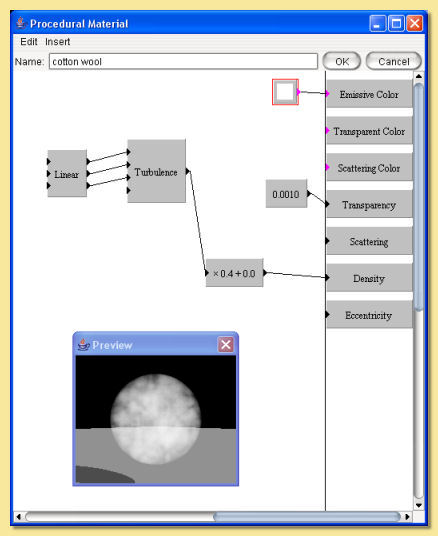

|  |
This is quite a simple material. A Turbulence pattern is used to create the 'cloud' effect. A Linear transform is used to scale the pattern down and the result is scaled and fed into the density property box. Transparency is set to a low (but non-zero) value so that the material is almost opaque. Scattering is set to 0.5 which means that half the light is scattered isotropically (eccentricity is left at the default of 0). |